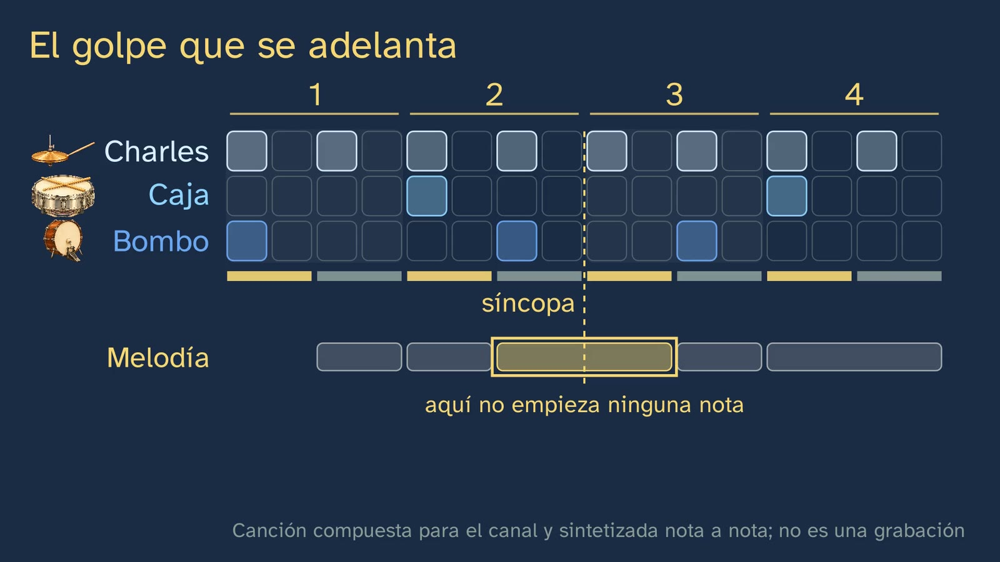

El pulso y el ritmo
En pocas palabras
Es la segunda clase del tema «Una canción, capa a capa», una clase de práctica: abre la capa del ritmo de la canción del canal. Su mensaje cabe en una línea: el pulso lo lleva quien escucha, el compás lo agrupa, y la rejilla de dieciséis pasos de las cajas de ritmos, que es una partitura, escribe dónde cae cada golpe; y lo que hace que un ritmo te mueva es dónde caen sus golpes. Toda la música la ha compuesto y sintetizado el canal, nota a nota, con la canción de la clase 1 (ocho compases en do mayor, a 90 pulsos por minuto). Malik habla y nunca canta, y no suena ninguna canción con dueño.
La clase se rehízo más sencilla tras su segundo borrador (ADR-186 del canal): cada concepto se explica antes de usarse, con su sonido, su dibujo y su porqué. El swing, el tresillo y el compás compuesto pasan a la clase del tema 2 «Doce compases y tres acordes: el blues y el swing».
Primero, las tres piezas de la batería, explicadas y oídas una a una: bombo, caja y charles (0:38). El gancho, con su contexto: en 1980, la empresa japonesa Roland sacó la caja de ritmos TR-808, una máquina que toca la batería con el tiempo exacto, y su manual enseñaba a escribirle un ritmo en una rejilla de dieciséis casillas (2:28). Pero un ritmo exacto puede sonar a robot o hacer que bailes: ¿de qué depende?
Se oye antes de nombrarse: el alumno da palmas en el pulso de la canción (3:09), y el ritmo se define frente a él, como el dibujo de golpes de cada capa. Cuenta y descubre en qué número cambia el acorde: el uno es el apoyo, el principio del compás; cada pulso del compás es un tiempo; el uno, el tiempo fuerte; el dos y el cuatro, débiles; el tres, semifuerte (3:59). Qué dicen los dos números del 4/4, con la redonda que vale cuatro negras (4:59), y binario, ternario y cuaternario, oídos con la batería del canal. Después, la negra, la corchea y la semicorchea como trozos del pulso, y la rejilla de dieciséis, que es un compás entero (6:15), con la partitura de percusión justo debajo, nota a nota bajo su casilla: sus líneas no marcan alturas, sino instrumentos (7:26). El alumno predice dónde va la caja, oye las dos opciones y dice con cuál se le mueve más el cuerpo: es el backbeat, y el error típico («el tiempo fuerte es el golpe que suena más fuerte») se desmonta con la propia caja (9:28). Tamlyn lo encontró en 644 de 712 discos de rock and roll (9:53).
Lo más difícil, despacio y con tempo lento (10:31): las dos mitades de cada pulso, fuerte y débil, y cómo se cuentan; el bombo de la canción, que se adelanta; el contratiempo y la síncopa, cada uno con su definición, en la rejilla y en la partitura, y comparados lado a lado. El alumno reconoce él mismo: el re largo del compás 4 no es síncopa (13:56). Sin el charles, en el tiempo tres no suena nada y la palmada cae ahí igual: el pulso lo lleva quien escucha (14:27). Y la respuesta al gancho, con Stupacher y otros (2022): lo que más mueve es un ritmo sincopado en su punto (15:33). Cierran el ostinato (15:59), la percusión corporal (pie, palmada y muslo, con una guía que se retira) (16:24), un dictado rítmico a una voz, con la pregunta de si algún golpe va a contratiempo (18:30), y la pregunta abierta: ¿el groove está en el tiempo exacto o en los pequeños desajustes del batería?
Objetivo. Al terminar, el alumnado sabrá encontrar el pulso de una canción, agruparlo en compases, leer y escribir un ritmo en la rejilla de dieciséis pasos (la de las cajas de ritmos, que es una partitura) y reconocer el backbeat, el contratiempo y la síncopa.
Currículo
Real Decreto 243/2022, anexo II, Lenguaje y Práctica Musical, materia de la vía de Música y Artes Escénicas de 1.º de Bachillerato. Texto consolidado del BOE comprobado el 28/10/2026.
| Elemento | Qué dice el decreto | Dónde se trabaja |
|---|---|---|
| Saber básico (bloque A) | «El ritmo: compases; ritmos irregulares y libres; polirritmias y polimetrías, grupos de valoración especial. La modalidad.» | El pulso, el compás y sus tiempos, y el 4/4 (3:09–6:03). Los compuestos, los grupos de valoración especial, la amalgama y la polirritmia, en el tema 2 |
| Saber básico (bloque A) | «Los elementos musicales en la tradición musical occidental, en el folclore y en las músicas populares urbanas.» | La batería por piezas (0:38); el backbeat del rock and roll y su raíz en las palmas de las iglesias afroamericanas (9:53) |
| Saber básico (bloque A) | «Notación convencional (grafía tradicional) y notación no convencional…» | La rejilla de dieciséis (grafía no convencional) y la partitura de percusión, nota a nota (6:15–9:27); la melodía, en rejilla y en partitura (12:27) |
| Saber básico (bloque B) | «Estrategias de escucha o visionado de obras o fragmentos musicales.» | Toda la clase: el pulso, el compás, la caja, el bombo, la síncopa |
| Saber básico (bloque B) | «Técnicas de realización escrita de dictados sencillos a una voz.» | El dictado del bombo (18:30) |
| Saber básico (bloque B) | «Técnicas de interpretación a través de la voz, del cuerpo o de instrumentos musicales, con o sin acompañamiento.» | La percusión corporal sobre la canción sin batería (16:24) |
| Competencia específica 1 | «Cultivar la escucha activa…» | Toda la clase; lo subjetivo, en 9:06 (¿con cuál se te mueve el cuerpo?) |
| Competencia específica 2 | «…analizando y comparando partituras con diversas grafías…» | La rejilla y la partitura, con el mismo reloj (7:26, 8:02) |
| Competencia específica 3 | «Aplicar estrategias de interpretación musical, utilizando la lectura como medio de aproximación a la obra…» | La percusión corporal y el dictado |
| Criterio 1.1 | «Reconocer y describir los diferentes parámetros y elementos musicales de una obra…» | Pulso, compás, tiempos fuerte y débiles, backbeat, contratiempo y síncopa; el alumno decide él mismo si una nota larga es síncopa (13:56) y si algún golpe del dictado va a contratiempo (19:36); en los dos casos, la respuesta es que no, y por qué |
| Criterio 2.1 | «Describir las principales características de los elementos musicales… presentes en partituras con grafía convencional y no convencional…» | La rejilla y la partitura de percusión |
| Criterio 2.2 | «Comparar la representación de los elementos musicales en partituras con diferente grafía…» | La rejilla enseña de un vistazo dónde cae cada golpe; la partitura lo dice con figuras, y la lee cualquier músico (8:19) |
| Criterio 3.1 | «Leer, con autonomía, partituras sencillas, con o sin apoyo de la audición.» | La partitura de percusión, debajo de la rejilla, y la solución del dictado |
| Criterio 3.2 | «Ejecutar fragmentos musicales sencillos… a través de la voz, del cuerpo o de instrumentos musicales…» | La percusión corporal (16:24) |
| Criterio 3.4 | «Generar ideas musicales o coreográficas sencillas, utilizando diferentes instrumentos, la voz o el cuerpo, en improvisaciones libres o dirigidas.» | Inventa tu propio bombo: cambia sus golpes de casilla y busca el que más te mueve (18:18) |
Lo que es concreción del canal. La batería por piezas, la rejilla de dieciséis y el backbeat no los nombra ningún currículo vigente: son la concreción del canal de los saberes del ritmo, la notación y las músicas urbanas (la ficha del tema lo explica). La percusión corporal la traen Madrid y Castilla y León.
Cómo está construida la clase
Capítulos del vídeo
Unos veintidós minutos. Es una clase de práctica con el modelo del departamento, oír, ver y hacer: cada idea se oye antes de nombrarse, se ve con el mismo reloj que suena (la rejilla y la partitura se encienden con cada golpe, y nada se enciende sin sonido) y se hace con el cuerpo o con el lápiz. Los bloques de detalle (el 4/4, las figuras, la partitura de percusión, el error típico, el contratiempo y la síncopa) van con la voz más lenta.
| Capítulo | Qué pasa | Por qué así |
|---|---|---|
| Qué vamos a ver (0:00) | Malik presenta la clase; el mapa del tema con su teclado. | El mapa, en todas las clases. |
| Lo que ya sabes (0:26) | ¿Qué capa lleva el pulso? El ritmo, y sus tres piezas, oídas una a una. | Recuperar la clase 1 y explicar con el objeto lo que allí sólo se nombró. |
| Las soluciones (1:41) | Los tres ejercicios de la clase 1. | Breves, con su enunciado a la vista. |
| Una máquina que toca el ritmo (2:28) | La TR-808 (1980) y su rejilla; Malik: ¿de qué depende que un ritmo te mueva? | El gancho, con su contexto. |
| El pulso (3:09) | Palmadas en el pulso; 90 por minuto; el ritmo, sobre el pulso. | Oír y hacer antes de nombrar. |
| El compás (3:59) | El acorde cambia en el uno: compás, tiempo, fuerte, débiles y semifuerte; el 4/4; binario y ternario, oídos. | Predecir, oír y nombrar, con el porqué de cada nombre. |
| La rejilla de dieciséis (6:15) | Las figuras como trozos del pulso; la rejilla y su partitura, fila a fila; la caja en el 1 y el 3 o en el 2 y el 4: el backbeat; el error típico. | La pieza que nadie hace: rejilla, partitura y sonido con el mismo reloj (criterios 2.1 y 2.2). |
| ¿Cómo lo sabemos? (9:53) | 644 de 712 discos de rock and roll (Tamlyn, 1998); sin inventor. | La prueba de lo que se afirma. |
| El golpe que se adelanta (10:31) | Las mitades del pulso; el bombo que se adelanta: contratiempo; la síncopa de la melodía; los dos, comparados; ¿es una síncopa?; el pulso que no suena; lo que te mueve (Stupacher y otros, 2022); el ostinato. | Lo difícil, despacio, repetido y comprobado por el alumno. |
| Tu turno, con el cuerpo (16:24) | Pie, palmada y muslo sobre la canción sin batería, con una guía que suena y se retira; inventa tu bombo. | El ejemplo que se retira (artículo 14); improvisar (criterio 3.4). |
| Un dictado (18:30) | El bombo de un compás nuevo, a una voz; ¿alguno va a contratiempo? | Una lectura o un dictado en cada clase. |
| Para practicar (19:57) | Tres ejercicios; la pregunta abierta, con dos versiones de la canción; la despedida. | Las soluciones, en la clase 3. |
Plan de una sesión de 50 minutos
Pensado para verlo en clase con buenos altavoces (con los de un portátil, el bombo se oye peor) y sitio para dar palmas. Cada alumno, con dos rejillas de dieciséis dibujadas (la hoja del alumnado trae una para recortar).
| Minutos | Qué se hace |
|---|---|
| 0–3 | Sin vídeo. Se pone una canción que el grupo conozca y todos dan palmas en el pulso. ¿Dónde cae la de cada uno? |
| 3–15 | Vídeo hasta el final del compás (6:15). Parar al preguntar en qué número cambia el acorde (3:59): contar todos en voz alta. |
| 15–24 | Vídeo hasta el final de «¿Cómo lo sabemos?» (10:31). En la predicción de la caja (8:34) y en «¿con cuál se mueve el cuerpo?» (9:06), a mano alzada, con razones. |
| 24–33 | «El golpe que se adelanta», «Lo que te mueve» y el ostinato (10:31–16:24). En «¿Es una síncopa?» (13:56), cada uno lo decide antes de oír la respuesta. |
| 33–45 | La percusión corporal (16:24) en grupo, de pie si se puede; después, el dictado (18:30) en la rejilla. |
| 45–50 | La pregunta abierta, en común. |
Errores típicos y cómo se tratan
- «El tiempo fuerte es el golpe que suena más fuerte.» Es el error de esta clase (9:28). Fuerte y débil son posiciones del compás (acento métrico), no volumen (acento dinámico): en el backbeat, el golpe que más se oye, la caja, cae en los tiempos débiles 2 y 4. Lo distinguen Hindemith y Lerdahl y Jackendoff; los diccionarios definen el backbeat como el acento en el 2 y el 4. La clase evita decir «acento» para el uno y habla de «apoyo», para no reforzar el error antes de desmontarlo.
- Llamar síncopa a cualquier golpe fuera del pulso. En los manuales españoles (UCM, Curso 0), el contratiempo es una nota en parte débil con la fuerte de antes en silencio (el bombo de la canción, entre el 2 y el 3, y entre el 3 y el 4) y la síncopa, una nota que empieza en parte débil y se prolonga sobre la fuerte (el mi de la melodía, de la mitad débil del 2 al 3). El contratiempo se juzga en la línea de cada instrumento: en el 2 suena la caja, pero el bombo calla. La investigación sobre el groove usa «síncopa» en sentido amplio; la clase dice «ritmo sincopado» para no mezclarlas.
- «Una nota larga es una síncopa.» El re del compás 4 dura pulso y medio pero empieza en el uno, en una mitad fuerte: no lo es (13:56). La síncopa empieza en una mitad débil.
- «Si no suena, no hay pulso.» El pulso lo pone quien escucha: en la canción sin charles, en el tiempo tres no suena nada y la palmada cae ahí igual (14:27).
- «Cuantizado es robótico; el groove está en los desajustes.» Es la idea de Charles Keil (1987). Puesta a prueba, las versiones a tiempo dieron tantas ganas de moverse como las originales, y las exageradas, menos (Senn y otros, 2016, 159 personas; Frühauf, Kopiez y Platz, 2013, 93 estudiantes de música). Es la pregunta abierta: no se cierra.


Preguntas y soluciones
Para y piensa (dentro del vídeo)
- ¿Qué capa lleva el pulso? (0:26). El ritmo: el bombo, la caja y el charles.
- ¿En qué número cambia el acorde? (3:59). En el uno, el tiempo fuerte, donde cae también el bombo.
- ¿Dónde pondrías la caja: en el 1 y el 3, o en el 2 y el 4? (8:34). En la canción, en el 2 y el 4: el backbeat. No hay una respuesta «correcta»: la de la canción es la más común en el rock and roll.
- ¿Con cuál de las dos se te mueve más el cuerpo? (9:06). Es una pregunta de sensaciones: todas valen si se razonan con lo que pasa en la música.
- ¿Es una síncopa el re largo del compás 4? (13:56). No: empieza en el uno, en una mitad fuerte. Una nota larga no basta.
- El dictado (18:30). El bombo, en el 1, entre el 1 y el 2, y en el 3: pasos 1, 3 y 9 de la rejilla.
- ¿Alguno de esos golpes del bombo va a contratiempo? (19:36). Ninguno: el de entre el 1 y el 2 cae en una mitad débil, pero en la fuerte de antes ya sonaba el bombo.
La hoja del alumnado: ¿fuerte o débil? 1. F, ninguno (en el número). 2. F, ninguno. 3. D, contratiempo (el bombo calla en el 2). 4. D, síncopa (se alarga sobre la mitad fuerte del 3). 5. F, ninguno (una nota larga no basta).
Para practicar (las soluciones, al principio de la clase 3)
- Cuenta los pulsos de una canción durante 15 segundos, calcula cuántos lleva por minuto y apunta qué capa los marca más claro. Depende de la canción: se multiplica por cuatro. Con la canción del canal salen 22 o 23 en 15 segundos: unos 90 por minuto. Lo más común es que el pulso lo marquen el bombo y la caja; en una balada, puede marcarlo el piano.
- Escribe en una rejilla de dieciséis, y después en partitura, un ritmo con el bombo en el 1 y el 3, la caja en el 2 y el 4, y el charles en las ocho corcheas. Es el ritmo que la clase construye. Rejilla: charles en los pasos 1, 3, 5… 15; caja en los pasos 5 y 13; bombo en los pasos 1 y 9. Partitura: ocho corcheas de charles en aspa encima del pentagrama; abajo, bombo en el primer espacio en los tiempos 1 y 3, y caja en el tercer espacio en los tiempos 2 y 4.
- Explica por qué el tiempo fuerte no es el golpe que más suena. Una respuesta completa: fuerte y débil dicen dónde se apoya el compás (el uno, donde empieza y cambia el acorde), no cuánto suena cada golpe; en el rock, la caja suena fuerte y cae en los tiempos débiles, el 2 y el 4.
Para seguir pensando. ¿Dónde está el groove: en el tiempo exacto o en los pequeños desajustes del batería? No tiene respuesta de libro. Tres caminos para la conversación: lo que mide el experimento (ganas de moverse, no gusto); lo que no mide (tocar en grupo, en directo, bailar de verdad); y la propia canción del canal, que se rehízo con unos milisegundos de «mano» y fraseo porque sonaba «muy de ordenador» (ADR-157 del canal). Si os sale una buena discusión, contadla en el Ágora, en el hilo del profesorado de esta clase.
Una actividad para el aula
La batería de la clase (unos 15 minutos, en grupos de tres; trabaja los saberes B de la interpretación con el cuerpo y de los dictados, y los criterios 3.1, 3.2 y 3.4).
- Repartirse la batería (3 minutos). En cada grupo, uno es el bombo (el pie), otro la caja (una palmada) y otro el charles (la mano en el muslo). Con la rejilla a la vista, lo tocan juntos sobre una canción con pulso claro.
- Escribir (5 minutos). Cada grupo inventa un compás nuevo cambiando sólo el bombo, y lo escribe en la rejilla y en partitura.
- Dictárselo (5 minutos). Cada grupo toca su compás cuatro veces y otro grupo escribe su bombo y marca qué golpes van a contratiempo.
- En común (2 minutos). ¿Qué bombos dieron más ganas de moverse? ¿Tenían contratiempos? ¿Cuántos?
Para el profesorado: lo que van a encontrar. El pie y la palmada salen enseguida; el muslo, dos veces por pulso, cuesta más. Si una misma persona toca el muslo y la palmada, en el 2 y el 4 la mano del muslo sube a la palmada (es lo que hace el vídeo). Los bombos con demasiados contratiempos se pierden: es la curva del groove de la clase, en el aula.
Recursos abiertos
- LMMS, programa libre y gratuito para Windows, macOS y Linux, con un editor de patrones de dieciséis pasos («4 steps to each beat»): https://lmms.io. Es uno de los programas del taller del tema (clase 8).
- GarageBand para iPhone y iPad, gratuito, con secuenciador de pasos: https://support.apple.com/es-es/101954.
- Ableton Learning Music, en el navegador, gratis y en español: una rejilla de ritmos para hacer y deshacer sin instalar nada: https://learningmusic.ableton.com/es/. Su aviso de cookies pide a quien tenga menos de 16 años que pulse «Cerrar» para no dar el consentimiento.
- El manual de la TR-808, en la web de Roland (en inglés): https://static.roland.com/assets/media/pdf/TR-808_OM.pdf.
- La tesis de Tamlyn, en abierto en el repositorio de la Universidad de Liverpool: https://livrepository.liverpool.ac.uk/3175210/.
Notas para el profesorado
- El swing de la canción del canal. Desde la clase 1, la primera corchea de cada pulso dura el 57 % del pulso: 0,57/0,43 = 1,33 : 1. Esta clase no lo nombra (ADR-186: lo que no cabe explicado, a su clase): habla de la rejilla escrita, donde las dos corcheas son iguales. Es la sorpresa que guarda el tema 2, en la clase del blues y el swing, con su medida (Corcoran y Frieler, 2021). Ninguna frase del vídeo dice que la canción suene «exacta».
- El tiempo semifuerte. El DLE, en «tiempo», da de ejemplo que un compás de cuatro por cuatro tiene dos tiempos fuertes y dos débiles; Zamacois y otros tratados llaman semifuerte al tercero (lo recoge la Gran Enciclopèdia de la Música, «semicompàs»). La clase lo dice así: el uno, fuerte; el tres, semifuerte; el dos y el cuatro, débiles.
- «Acento» y «apoyo». En el habla común, acento es «más fuerte». Para no reforzar el error típico, la clase llama apoyo al tiempo fuerte; en el aula se puede introducir «acento métrico» frente a «acento dinámico» (Hindemith; Lerdahl y Jackendoff, 1983).
- El experimento del groove. Senn y otros (2016) usaron dos bases de bajo y batería grabadas por profesionales (funk a 100 pulsos y swing a 150), con 159 personas: las versiones cuantizadas y las originales dieron las mismas ganas de moverse, y las de desajustes exagerados, menos, sobre todo entre los músicos. Midieron el groove (las ganas de moverse), no el gusto en general.
- La curva del groove. Se apoya en Stupacher y otros (2022), un artículo de perspectiva, y en dos estudios grandes: Matthews y otros (2019), con 201 personas, y Stupacher, Wrede y Vuust (2022), con 174. El estudio clásico de Witek y otros (2014) tuvo 66: el canal no enseña estudios pequeños como prueba.
Lo que la clase deja fuera, y por qué
- El swing, el tresillo y el compás compuesto. Pasan a la clase del tema 2 «Doce compases y tres acordes: el blues y el swing» (ADR-186), donde caben explicados.
- El tempo «natural» de 120 pulsos por minuto. Las cifras salen sobre todo de listas de música de baile, y el tempo cómodo cambia con la edad (McAuley y otros, 2006, 305 personas): no hay un tempo del cuerpo.
- La TR-909 y su «shuffle». Roland dice que su secuenciador ya tenía swing, pero falta una segunda fuente: no se cuenta.
- El origen de la palabra «backbeat». Sólo un diccionario lo da (background beat): la clase no lo traduce.
- La amalgama, la polirritmia y los ritmos del mundo. Son el tema 2, «Los ritmos del mundo».
Fuentes
Currículo
- Real Decreto 243/2022, anexo II, Lenguaje y Práctica Musical, texto consolidado: https://www.boe.es/buscar/act.php?id=BOE-A-2022-5521.
La batería
- Britannica, «bass drum», «snare drum» y «hi-hat»; Columbia University, Center for Jazz Studies, Jazz Glossary; Yamaha, Musical Instrument Guide, «Drums».
- N. Weinberg (1994). «Guidelines for Drumset Notation». Percussive Notes (PAS), junio, pp. 15-26.
La máquina
- Roland Corporation (1980). TR-808 Rhythm Composer Owner's Manual: https://static.roland.com/assets/media/pdf/TR-808_OM.pdf.
- Roland, «The TR-808 Story»: https://www.roland.com/us/promos/roland_tr-808/; Roland, empresa: https://www.roland.com/global/company/overview/.
El compás y el error típico
- Real Academia Española, Diccionario de la lengua española: «tiempo», «negro», «corchea», «semicorchea», «sincopado», «ostinato», «vals».
- Rodríguez Cuervo y García Mira (2024-2025). Curso 0: Herramientas básicas del lenguaje musical. Universidad Complutense de Madrid, temas 1 y 7 (el quebrado del compás; síncopa y contratiempo).
- Gran Enciclopèdia de la Música, «semicompàs»: https://www.enciclopedia.cat/gran-enciclopedia-de-la-musica/semicompas.
- M. Gotham, C. Hamm y K. Shaffer. Open Music Theory, «Simple Meter and Time Signatures».
- P. Hindemith (1946). Elementary Training for Musicians (en español, Adiestramiento elemental para músicos, Ricordi Americana); F. Lerdahl y R. Jackendoff (1983). A Generative Theory of Tonal Music. MIT Press.
- American Heritage Dictionary y Merriam-Webster, «backbeat».
El backbeat
- G. N. Tamlyn (1998). The Big Beat: Origins and Development of Snare Backbeat and Other Accompanimental Rhythms in Rock'n'Roll. Tesis doctoral, Universidad de Liverpool. doi:10.17638/03175210.
- M. Baur (2021). «Towards a Cultural History of the Backbeat». En The Cambridge Companion to the Drum Kit. Cambridge University Press, pp. 34-51.
La síncopa y el groove
- J. Stupacher, T. E. Matthews, V. Pando-Naude, O. Foster Vander Elst y P. Vuust (2022). The sweet spot between predictability and surprise. Frontiers in Psychology, 13, 906190. doi:10.3389/fpsyg.2022.906190.
- T. E. Matthews y otros (2019). PLoS ONE, 14(1), e0204539; J. Stupacher, M. Wrede y P. Vuust (2022). PLoS ONE, 17(5), e0266902.
- C. Keil (1987). Participatory Discrepancies and the Power of Music. Cultural Anthropology, 2(3), 275-283.
- O. Senn, L. Kilchenmann, R. von Georgi y C. Bullerjahn (2016). The Effect of Expert Performance Microtiming on Listeners' Experience of Groove in Swing or Funk Music. Frontiers in Psychology, 7, 1487. doi:10.3389/fpsyg.2016.01487.
- J. Frühauf, R. Kopiez y F. Platz (2013). Musicae Scientiae, 17(2), 246-260.
Lo que la clase deja fuera
- J. D. McAuley, M. R. Jones, S. Holub, H. M. Johnston y N. S. Miller (2006). The Time of Our Lives: Life Span Development of Timing and Event Tracking. Journal of Experimental Psychology: General, 135(3), 348-367 (305 personas, de 4 a 95 años).
- C. Corcoran y K. Frieler (2021). Playing It Straight: Analyzing Jazz Soloists' Swing Eighth-note Distributions with the Weimar Jazz Database. Music Perception, 38(4), 372-385. doi:10.1525/mp.2021.38.4.372.
Sobre esta clase
GinCol Lab es un canal gratuito de ciencia para curiosos. Malik es un personaje ilustrado, no una persona real, y su voz es sintética: está generada por ordenador con Microsoft Azure AI Speech y no imita a ninguna persona conocida. Toda la música la ha compuesto el canal, nota a nota; sus sonidos salen de numpy, pedalboard y Stable Audio 3 (Powered by Stability AI), y no suena ninguna grabación ajena. Las ilustraciones del bombo, la caja, el charles, el pie, la palmada y el muslo, con la generación de imágenes de OpenAI. El guion y esta ficha los escribe una IA (Claude, de Anthropic) y los revisa una persona antes de publicar; cada dato está comprobado en dos fuentes o en la original.
Esta ficha se publica con licencia Creative Commons Reconocimiento 4.0: puedes copiarla, adaptarla y usarla en tu aula citando a GinCol Lab. Las imágenes son de la pizarra del vídeo: los dibujos y las partituras, del canal; las ilustraciones de la batería y del cuerpo, con la generación de imágenes de OpenAI. Las cifras y las citas son de sus autores.
Cómo citar esta ficha
GinCol Lab (2026). El pulso y el ritmo. Ficha docente de GinCol Lab: Lenguaje y Práctica Musical · 1.º de Bachillerato · Una canción, capa a capa · Clase 2 de 8. https://gincollab.github.io/aula/lenguaje-y-practica-musical/t01-c2/. CC BY 4.0.
Ficha docente de GinCol Lab · CC BY 4.0 · Código fuente y erratas